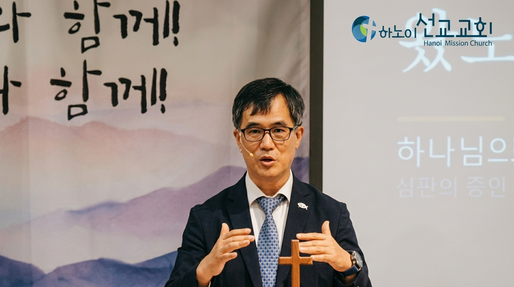
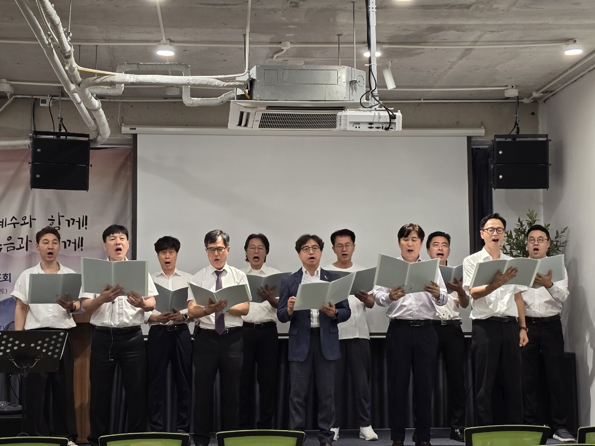

예수와 함께,
복음과 함께
하노이 선교교회는 하나님 중심, 성경 중심, 예배 중심의 신앙을 세우며, 성도들이 삶의 자리와 일터에서 선교사로 살아가도록 함께 기도하고 동행합니다.
담임목사 이보용
우리 교회가 꿈꾸는 것
하노이의 젊은 세대와 새롭게 신앙을 시작하는 분들에게 복음을 전합니다.
베트남 땅에서 만나는 사람들에게 복음을 전하고, 제자화 훈련을 통해 신앙의 성장을 돕습니다.
일상 속에서 신앙을 나누고, 진심 어린 돌봄과 교제가 있는 살아있는 공동체를 세워갑니다.
아이들의 웃음 속에 부모의 신앙을 본받는, 세대를 잇는 교회를 꿈꾸고 있습니다.

함께 예배드려요
처음 오시는 분도 편안하게 참여하실 수 있습니다. 예배 후에는 3층에서 공동식사와 친교가 이어집니다.
주일예배
수요예배 및 성경공부
새벽기도회
금요기도회
유·초등부
청년부 / 중·고등부
새 말씀과 교회 소식을
더 빠르게 만나세요
유튜브에 새 설교가 등록되면 홈페이지의 최신 영상 목록에도 자동으로 반영됩니다. 인스타그램, 틱톡, 잘로 채널도 순차적으로 연결할 예정입니다.
추천 설교 말씀
전체 영상은 유튜브에서 확인할 수 있습니다세대와 삶을 잇는
따뜻한 교회
유초등부부터 청년부, 남녀선교회와 찬양 공동체까지 말씀과 교제로 서로를 세우며 하노이의 삶을 함께 나눕니다.

처음 오셔도 괜찮습니다
출장, 주재, 유학, 이주로 하노이에 오신 모든 분을 환영합니다. 부담 없이 예배에 참여해 주세요.
교회 찾기
그랩에서 ‘Hanoi Mission Church’ 또는 ‘The Matrix One’을 검색하세요.
주일예배 참여
주일 오전 10:30, 2층 본당으로 오시면 안내 담당자가 도와드립니다.
식사와 교제
예배 후 3층 공동식사에서 성도들과 인사하고 하노이 생활 정보도 나눌 수 있습니다.
하노이에서 열방으로
베트남 현지 교회와 신학생, 농아교회, 선교 훈련과 아시아 지역 사역을 기도와 후원으로 섬깁니다.
기도와 나눔으로 함께합니다
2026년 10월 18일 주보에 실린 선교 후원 사역을 소개합니다. 후원 방법과 최신 현황은 교회에 직접 문의해 주세요.
베트남 현지 사역
하노이 농아교회, 베트남 복음교단 신학교, 비전홈(약사) 등을 기도와 후원으로 섬깁니다.
아시아 지역 동역
라오스, 키르기즈스탄, 카자흐스탄의 선교 동역자와 AM105 선교단체를 위해 함께 기도합니다.
후원 문의
후원 계좌나 방식은 홈페이지에 임의로 게시하지 않습니다. 참여를 원하시면 교회에 문의해 주세요.
이메일로 문의주보 자료실
교회에서 제공한 주보 원본 PDF를 최신순으로 모았습니다. 각 주보는 열람하거나 다운로드할 수 있습니다.
- 주일 주보 · 제42호하노이 선교교회 · 2쪽 PDF
- 주일 주보 · 제41호하노이 선교교회 · 2쪽 PDF
- 주일 주보 · 제39호하노이 선교교회 · 2쪽 PDF
- 주일 주보 · 제35호하노이 선교교회 · 2쪽 PDF
- 주일 주보 · 제34호하노이 선교교회 · 2쪽 PDF
- 주일 주보 · 제33호하노이 선교교회 · 2쪽 PDF
- 주일 주보 · 제32호하노이 선교교회 · 2쪽 PDF
- 주일 주보 · 제31호하노이 선교교회 · 2쪽 PDF
- 주일 주보 · 제30호하노이 선교교회 · 2쪽 PDF
- 주일 주보 · 제28호하노이 선교교회 · 2쪽 PDF
- 주일 주보 · 제27호하노이 선교교회 · 2쪽 PDF
- 주일 주보 · 제24호하노이 선교교회 · 2쪽 PDF